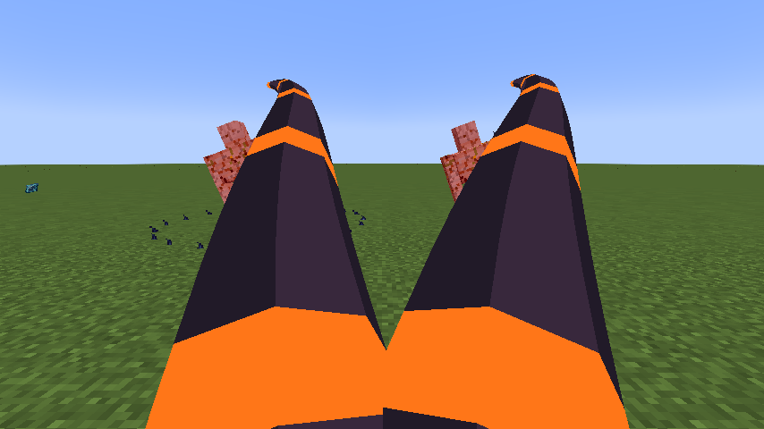

Agni, Lord of the Black Flame is a Ultimate Skill inspired by Nu Udra. It uses visible oil tentacles to pull targets into burning ground.
Contents
All damaging arts in this skill use fire elemental damage, including its area hits and pulses.
Usage
Passive
[Passive - Toggle] — Furnace Mantle
While toggled on, gain 18 armor, 100% melee attack and 100% flame boost. Fire-tagged damage is resisted while the passive is enabled, preserving its fire-protection utility without a lingering potion. Melee attacks do not coat targets or accumulate oil. This is an offensive passive, not an extra ignition step.
Enable or disable this through Tensura’s native Ability Selection skill toggle. It is separate from active mode cycling and has no fifteen/thirty-second duration. Upkeep is 60 aura per second, with the first second paid on enabling. It turns off when aura is insufficient or activation requirements fail. Turning it off removes its own attribute modifiers immediately.
Active
| Mode | Aura | Cooldown | Raw opening damage |
|---|---|---|---|
| 1. Oil Lash | 640 | 2 s | 210 |
| 2. Blackflame Ignition | 3,200 | 7 s | 270 |
| 3. Black Sun Caldera | 6,000 | 60 s | See signature below |
Damage calculation: multiply the listed base values by 0.90, then by the mastery multiplier (up to 1.50). Ultimate table values already include their 3× base multiplier. Elemental boosts, defenses, barriers, and situational modifiers also apply. EP does not multiply damage.
Oil Lash
[Active - Press] — Oil Lash
Lash up to 6 enemies in a forward fan within 22 blocks and pull them toward you. Each lash has a synced three-dimensional tapered tentacle with a dark body and glowing orange bands. It extends, curls and recoils over sixteen ticks. A missed cast still shows a tentacle sweep. Leave a pool at the final victim’s location, or at the aim point about ten blocks away on a miss. Maintain up to 5 pools; the oldest is replaced first.
Blackflame Ignition
[Active - Press] — Blackflame Ignition
Ignite valid owned pools for six seconds. Each affects a 4-block radius; overlapping pools cannot damage one enemy twice in a pulse. Opening damage is immediate and fixed, with no oil-stack multiplier. Later pulses deal 72 raw damage once per second and apply native Black Burn. If no valid controllable pool exists, place a fallback pool at the aim point up to six blocks away.
Black Sun Caldera
[Active - Press] — Black Sun Caldera
Create five burning pools in a ring six blocks around the caster. The ten-second caldera pulses through those owned locations. Opening raw damage is 270; later pulses use 108, before mastery and native modifiers. Existing secondary pulses pause during the domain to avoid duplicate scheduling.
Obtaining
Evolve Black Flame as Sovereign Hunter with 2,000,000 base EP and mastery of that Unique. Use /wildhunt ascend nu_udra. It replaces only the matching Unique; the Ultimate starts with its own mastery.
Evolution
| Unique Skill | Ultimate Skill | Requirements |
|---|---|---|
| Black Flame | Agni, Lord of the Black Flame | Sovereign Hunter; 2,000,000 base EP; matching Unique mastered |
Ascension replaces only the matching Unique. The Ultimate starts with its own mastery.
Suggested combo
Use Oil Lash to pull a victim and place a pool → ignite the pool. Cover likely escape routes with separate pools instead of farming stacks or overlapping them for duplicate damage.
Strengths and limitations
Pools are world locations, not status stacks on enemies. Unlit pools expire after fifteen seconds; ordinary ignition burns for six. Only your pools in the same dimension and within thirty-two blocks can be controlled. Native Black Burn and forced movement may be resisted.
In-game preview

In-game example of the active art.
Related pages
Skills · Mechanics · Evolution · Commands
Godly evolution
At mastery, True Hero or True Demon Lord awakening, and 12M base EP, use /myths to evolve this Ultimate into Aion, God of Causality. It replaces the selected Ultimate while preserving presets and remaining cooldowns.